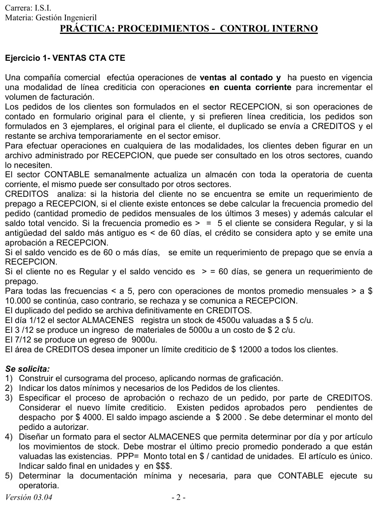

Práctica, ejercicio 1: ventas en cuenta corriente
Práctica de la cátedra, 2017
Enunciado



Propuesta de respuesta
Respuesta no verificada. La propuso Luta Studios con inteligencia artificial y ningún docente la revisó. Puede tener errores.
1. Cursograma
Una columna por sector, con los símbolos del resumen de un alumno que usa la materia. Los archivos Clientes y Cuenta corriente van al costado con flecha punteada. Si la flecha va hacia la operación, el archivo se consulta, y si va hacia el archivo, se actualiza. La cuenta corriente se repite en cada consulta para no cruzar líneas. Créditos cierra cada rama con su resultado y manda una sola comunicación, CR, que puede ser la aprobación, el requerimiento de prepago o el rechazo. Tocá el dibujo para verlo en pantalla completa.
La narrativa dice que, con menos de 5 pedidos por mes y más de $10000 de promedio mensual, «se continúa». En el dibujo eso es aprobar el pedido, porque es la única salida que queda entre las tres que nombra.
2. Datos mínimos del pedido
Pedido = nro_pedido + fecha + cod_cliente + modalidad(d)
+ detalle(e) + importe_total
modalidad(d) = <contado | cuenta corriente>
detalle(e) = cod_articulo + cantidad + precio_unitarioEl detalle se repite una vez por artículo. Los datos del cliente no se copian en el pedido. Se leen del archivo Clientes por cod_cliente, que es lo que Recepción controla al principio.
3. Aprobación o rechazo en Créditos
La narrativa, ordenada como tabla de decisión.
| Historia del cliente | Frecuencia promedio | Saldo vencido más antiguo | Monto promedio mensual | Resultado |
|---|---|---|---|---|
| No hay | Requerimiento de prepago | |||
| Hay | 5 o más (regular) | Menos de 60 días | Aprobación | |
| Hay | 5 o más (regular) | 60 días o más | Requerimiento de prepago | |
| Hay | Menos de 5 | 60 días o más | Requerimiento de prepago | |
| Hay | Menos de 5 | Menos de 60 días | Más de $10000 | Se continúa, aprobación |
| Hay | Menos de 5 | Menos de 60 días | $10000 o menos | Rechazo |
Con el límite nuevo, un pedido que pasa la tabla todavía tiene que entrar en el crédito disponible. Se calcula como en el procedimiento de ventas del resumen de un alumno, con los saldos impagos más los pedidos pendientes, menos las cobranzas que todavía no se registraron. Acá no hay cobranzas pendientes.
El pedido se autoriza hasta $6000. Si pide más, una salida razonable es aprobar hasta ese monto y pedir prepago por la diferencia. La narrativa no lo dice, así que es una propuesta.
4. Formato de movimientos de stock para Almacenes
Movimientos de stock. Artículo único. Diciembre
| Fecha | Concepto | Entrada (u) | Entrada ($) | Salida (u) | Salida ($) | Saldo (u) | Saldo ($) | PPP ($/u) |
|---|---|---|---|---|---|---|---|---|
| 01/12 | Stock inicial | 4500 | 22500.00 | 5.0000 | ||||
| 03/12 | Ingreso | 5000 | 10000.00 | 9500 | 32500.00 | 3.4211 | ||
| 07/12 | Egreso | 9000 | 30789.47 | 500 | 1710.53 | 3.4211 |
Con un ingreso el PPP se recalcula con la fórmula de la guía.
Un egreso sale al PPP vigente y no lo cambia. Salen pesos.
Saldo final. 500 unidades, que valen $1710.53.
Una fila por movimiento y por día deja ver el stock de cada día. Con más de un artículo, se arma una hoja por código.
5. Documentación mínima para Contable
Contable actualiza cada semana la cuenta corriente de los clientes, así que necesita los comprobantes que la mueven. En el resumen de un alumno son los que se archivan y generan registración.
| Documento | Qué hace en la cuenta corriente |
|---|---|
| Factura | Suma la venta en cuenta corriente a la deuda del cliente |
| Nota de débito | Suma un cargo que la factura no tenía, como intereses o diferencias de precio |
| Nota de crédito | Resta una devolución o una bonificación |
| Recibo | Resta lo que el cliente pagó |
Cada factura tiene que venir con su remito firmado por el cliente, porque en el procedimiento de ventas no se factura sin él. Las ventas al contado no pasan por la cuenta corriente.
6. Política de Recepción con las comunicaciones de Créditos
Una propuesta, porque la narrativa no da reglas para esta parte.
- Toda comunicación por escrito. Recepción solo actúa con la CR de Créditos y la adjunta al triplicado del pedido que tiene en el archivo temporario.
- Aprobación. Se le avisa al cliente y el pedido sigue a despacho. Nunca se despacha en cuenta corriente sin una aprobación escrita.
- Requerimiento de prepago. Se le avisa al cliente en el día. Si paga, el pedido sigue como una venta al contado con su recibo. Si no paga en un plazo fijo, por ejemplo 5 días hábiles, el pedido se anula.
- Rechazo. Se le avisa al cliente y se le ofrece comprar al contado. El triplicado pasa al archivo definitivo con la CR.
- Plazo de respuesta. Si Créditos no contesta en un plazo fijo, Recepción reclama por escrito. El pedido nunca se aprueba solo por falta de respuesta.
Respuesta no verificada. Puede tener errores.
Se armó con las páginas del parcial y del final, secciones Cursograma, Diccionario de datos, Documentos comerciales, Procedimiento de ventas e Inventarios.
Quedó en duda: La narrativa dice «se continúa» para los clientes no regulares con más de $10000 de promedio mensual. Se tomó como aprobación. No dice qué pasa si el cliente no figura en el archivo de Recepción, así que el dibujo solo lo controla. Tampoco dice qué hacer con un pedido que supera el crédito disponible. La propuesta de aprobar hasta $6000 y pedir prepago por la diferencia es una elección. La política de la consigna 6 es una propuesta. La fórmula del crédito disponible, los documentos de la consigna 5 y el cursograma salen del resumen de un alumno. La guía de control interno no está desarrollada en el Drive.